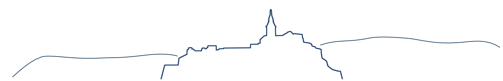

Ingrid & Christian
bis zum 5. September 2015
bis zum 5. September 2015

Für jene die schon früher vor Ort sind
alles zu Schokolade - essbarer Tiergarten
Burgbesichtigung - Greifvogelschau
Einkehr bei einem Buschenschank in der Umgebung
In und um Güssing gibt es diverse Möglichkeiten:
2km vom Stadtzentrum
modernes Hotel mit Check-In Automat
4 km vom Stadtzentrum
typisch burgenländisches Bauernhaus in ruhiger Lage
Kontakt: 02626/63984
3 km vom Stadtzentrum
Ferienwohnung für etwas längere Aufenthalte
3km vom Stadtzentrum
Pferde, Radeln, Sonnenschein für Familien
7 km vom Stadtzentrum
pannonischer Schmankerlwirt und Domizil der Weinritter
3 km vom Stadtzentrum
abgeschiedene Ferienwohnung für mehr als eine Nacht
12 km vom Stadtzentrum
Genussgasthof und Hotel im Herzen der Weinidylle
12 km vom Stadtzentrum
familiär geführtes Landhotel
3 km vom Stadtzentrum
bodenständiger Gasthof mit schönem Ausblick
ums Eck - für die Haut - beste Saunalandschaft
Rutschenparadies - für Gelenke und Wirbelsäule
Muskel, Rheuma, Herz
Europäisches Museum für Frieden
Burg- und Hexenmuseum, Klettersteig
Felsenmuseum, Schaubergwerk
erlebnisorientierte Stationen an der österreichisch-ungarischen Grenze
schönster Platz im Burgenland - Weinkeller aus dem 18. Jahrhundert
Weinmuseum und Vinothek
Kulturhauptstadt Europas - eine Autostunde entfernt
das antike Savaria in Ungarn
Kleinstadt in der Steiermark ums Eck
ungarische Kleinstadt mit historischem Stadtkern